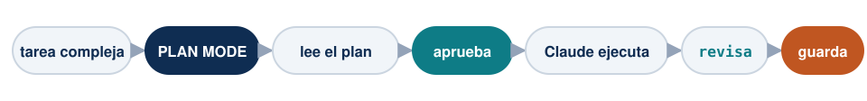
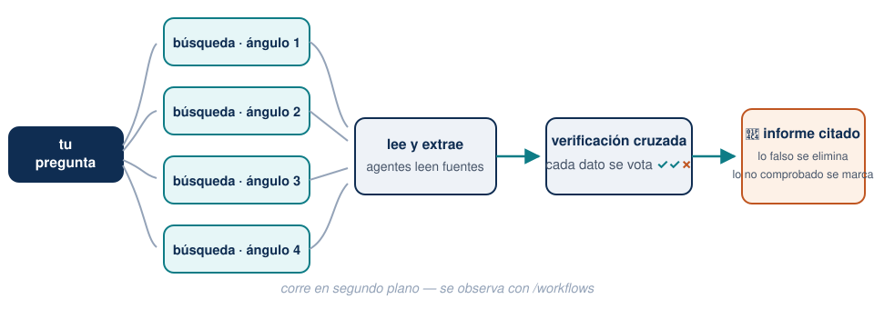
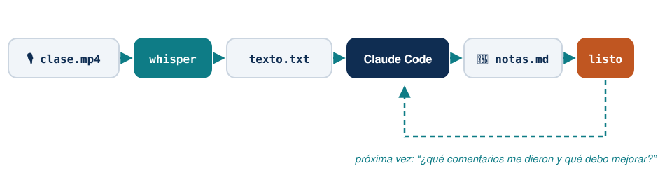

Sesión 2 — El flujo de investigación completo · Taller para docentes
Facultad de Ciencias Sociales, PUCP · con apoyo de Q-LAB
| Bloque | Tema | Tiempo |
|---|---|---|
| 1 | Repaso + Plan Mode con un caso real | 30 min |
| 2 | /deep-research: la revisión de literatura automática |
30 min |
| 3 | De sus datos a un dashboard compartible | 35 min |
| ☕ | Pausa | 10 min |
| 4 | Literatura → LaTeX → presentación, sin escribir código | 35 min |
| 5 | Whisper: sus clases y seminarios se vuelven material | 30 min |
| 6 | Cómo pedir las cosas + errores comunes | 10 min |
Hoy varias demos toman minutos en correr: las lanzamos al inicio y revisamos resultados al final de cada bloque. Así se trabaja de verdad con agentes.
| Movimiento | Cómo |
|---|---|
| Abrir Claude en mi carpeta | cd + pegar ruta → claude |
| Salir de un lío | Esc interrumpe · Ctrl+C ×2 sale · claude --resume recupera |
| Memoria del proyecto | /init genera el CLAUDE.md; ustedes lo corrigen |
| Elegir modelo | /model → Opus para todo |
| La regla de oro | Lo que recuerda se verifica; lo que comprueba contra fuente, es sólido |
Pregunta de control: ¿quién corrió /init en un proyecto real? ¿Qué entendió bien y qué corrigieron?
La forma correcta de trabajar con Claude Code no es una conversación eterna: son varias sesiones en paralelo, como asistentes con tareas asignadas.
Cada sesión con una tarea clara y acotada. Ustedes supervisan, corrigen y deciden — como con un equipo humano, pero con la paciencia infinita y el costo de una suscripción.
Shift+Tab hasta que la barra inferior diga plan mode: Claude puede leer y proponer, pero no tocar nada.

¿Cuándo? Siempre que empiecen algo nuevo o no sepan por dónde ir. Claude explora, les presenta un plan numerado, ustedes lo leen, cambian lo que quieran, y recién entonces se ejecuta.
Revisar un plan cuesta 2 minutos. Revisar 40 archivos modificados cuesta una tarde.
Sobre la carpeta de un curso o proyecto que tengan a la mano:
Este material lo preparé hace tiempo. Quiero modernizarlo: revisa
los documentos, dime qué está desactualizado o inconsistente, y
proponme un plan de actualización. No cambies nada todavía.Qué observar: el plan llega con preguntas de vuelta — ¿actualizo esto?, ¿conservo aquello? Ese ida y vuelta es el modo de trabajo: ustedes deciden, él ejecuta.
Nota
Cuando aprueben el plan, cambien a modo normal o auto mode (accept edits) y déjenlo trabajar. Al final pidan: “resúmeme todo lo que cambiaste”.
/deep-research — el comando estrellaEscriban el comando con la barra / al inicio (sin la barra no funciona — es un comando, no una frase) y su pregunta de investigación:
/deep-research ¿Cruzar el umbral de elegibilidad de Pensión 65
aumenta la adopción de billeteras digitales en el Perú?Lo que pasa detrás — un equipo completo de asistentes trabajando en paralelo:

Descarga los papers que citaste en una carpeta papers/,
organizados por tema.Tip
El producto no es solo el informe: es la carpeta de PDFs organizada y citable que queda en su proyecto, lista para las siguientes etapas.
Paso 0 — los datos ya están en la carpeta. Descárguenlos antes; no dependan de que la página del INEI cargue en vivo. (Lección aprendida: en la clase piloto la web del INEI se cayó en plena demo.)
Paso 1 — primero limpiar, en su propia conversación:
En datos/ está la base cruda de la encuesta. Revísala: valores
perdidos, etiquetas, inconsistencias. Proponme un plan de limpieza
y, cuando lo apruebe, genera la versión limpia en datos-limpios/.Paso 2 — con la data limpia, el dashboard:
Con la data de datos-limpios/ y mi pregunta de investigación
[pregunta], créame un dashboard HTML: estadísticas descriptivas,
los gráficos clave y una breve explicación de cada uno.Antes de mandar el link
Si lo comparten en la nube, actíven “cualquiera con el enlace” — el error clásico es mandar un link que solo abre el dueño. Pruébenlo en su celular antes de enviarlo.
Con la base de ejemplo que les entregamos (o una suya que ya esté limpia):
Explora la data de datos-limpios/ y créame un dashboard HTML con:
descripción de variables, distribución de las 4 variables clave, y
un gráfico que responda mi pregunta de investigación.Qué observar: cómo prueba, falla y se corrige solo hasta que el archivo compila. Ese ciclo — escribir, verificar, corregir — es lo que un chat no puede hacer.
PowerPoint es un programa. LaTeX es código.
Y la consecuencia práctica para ustedes:
Ya no necesitan saber LaTeX para tener documentos y slides con calidad de journal. Necesitan saber pedirlos y revisarlos.
Requisito de instalación (estaba en el correo previo): MiKTeX en Windows, MacTeX o Tectonic en Mac. Los asistentes ayudan a quien le falte.
Con la carpeta papers/ que dejó /deep-research en el Bloque 2:
Con los papers de la carpeta papers/, escríbeme la sección de
revisión de literatura de mi paper en LaTeX, con sus referencias
en BibTeX. Luego compílala y muéstrame el PDF.Y el hábito que ya conocen, ahora aplicado en serio:
Revisa dos veces que cada cita del texto exista en la bibliografía
y que cada dato citado corresponda al paper real. Dime qué corregiste.En la clase piloto, la segunda pasada encontró y corrigió un error de citado real. La doble verificación no es paranoia: es método.
Cuando el proyecto ya tiene literatura, gráficos y resultados, la presentación es un solo pedido:
Necesito presentar un avance de esta investigación: problema,
revisión de literatura y datos. Usa Beamer, máximo 15 slides,
con los gráficos que ya están en figuras/. Crea el LaTeX y compílalo.Qué observar: no están copiando y pegando nada a PowerPoint. Todo lo que el proyecto ya produjo — figuras, referencias, tablas — se reutiliza automáticamente.
Nota
El resultado es un primer borrador amigable: ustedes se sientan a darle su voz, su énfasis y su criterio. Eso no se delega.
Sus conversaciones académicas más valiosas son habladas: clases, seminarios, asesorías de tesis, sus propias presentaciones. Y normalmente… se evaporan.

Whisper es un transcriptor gratuito y local — el audio nunca sale de su computadora. Con las computadoras actuales, ~2 horas de clase se transcriben en minutos.
Paso 1 — que Claude conozca su máquina (una sola vez):
Quiero transcribir grabaciones de mis clases con Whisper.
Primero dime qué computadora tengo (procesador, memoria) y qué
versión de Whisper me conviene instalar. Instálala.Claude detecta si su equipo puede usar la versión rápida (Mac: mlx-whisper · Windows: faster-whisper) y la deja lista.
Paso 2 — transcribir y pedir algo útil:
En Descargas está clase-martes.mp4. Transcríbelo a texto con
marcas de tiempo y guárdalo en transcripciones/. Después léelo y
dame: los temas donde los estudiantes hicieron más preguntas, y
tres sugerencias concretas para mejorar la clase.Transcribí la grabación de mi clase piloto con los asistentes del Q-LAB (97 minutos → 90 segundos de procesamiento) y le pedí feedback. Me respondió, entre otras cosas:
“El material del día se agotó en 59 minutos; los 38 restantes fueron improvisados. La clase no estaba calibrada en tiempo.”
“Elegiste un repositorio demasiado grande para la demo.”
“El consejo sobre modelos quedó contradictorio: un alumno no puede salir de ahí con una regla accionable.”
Tenía razón en las tres. Esta sesión que están viendo fue rediseñada con ese feedback.
Usos inmediatos: mejorar sus cursos, actas automáticas de asesorías de tesis, procesar entrevistas de campo (con consentimiento), no perder nunca los comentarios que reciben al presentar un paper.
Una tarea real y pequeña — estas funcionan muy bien de entrada:
Lo que no conviene de entrada: que reescriba un capítulo entero, o que analice datos cuya limpieza no pueden verificar.
| Ayer no podían | Hoy sí |
|---|---|
| El chat solo veía lo que le pegaban | Un agente trabaja dentro de sus carpetas |
| Bibliografías a mano, con errores invisibles | Verificación cita por cita contra Crossref |
| Semanas buscando literatura | /deep-research + carpeta de papers en 20 min |
| Resultados por correo en Word | Dashboard compartible por link |
| “No sé LaTeX” | PDF y Beamer compilados, sin escribir código |
| Las clases se evaporaban | Transcritas, analizadas y con feedback |
Soporte continuo: los asistentes del Q-LAB · la guía escrita del taller (carpeta profesores/) · y el propio Claude — pregúntenle a él primero.
Gracias — alexander.quispe@pucp.edu.pe
Estos slides: escritos, diagramados y compilados con Claude Code, y mejorados con el análisis Whisper de las clases piloto.
Claude Code para investigación — Taller para docentes · PUCP 2026